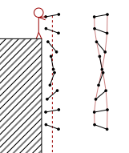
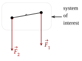
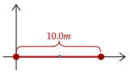
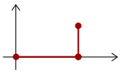
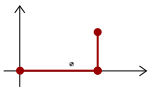

Let's analyze our baton again. To keep it simple, let us have it fall straight down in free fall. If we track the movement of the two ends of the baton, we can see it is really complicated due to it rotating.

However, we can see in the baton, there is, like we saw before, a point wherein it falls precisely in free fall. In other words, unlike everywhere else on the baton, this point is as if it is only under the force of gravity.
To simplify the calculations, let's let the mass of the rod connecting the two ends have negligible mass, and thus the baton is basically two masses. In particular, they are two particles with a certain mass, which let's call and .
Now, for the baton in free fall, the two masses have a weight acting on them. Overall, these two net forces act on the object, giving it an acceleration.

Thus, we know the net force on this baton is as such.
Now, using the Law of Acceleration, we can write out the equation as the following. We will use the subscript "cm" for the movement of the entire system, since we know that this point can substitute for the entire complicated rigid object.
We know that the mass of the entire system, which we've written as , is the sum of the two masses. Thus, we can substitute that.
Great; we've got an expression for the acceleration of what this "center of mass" point is. We can also get an expression for the velocity of this point, by integrating the above equation. Then, we can integrate it again to get the position.
Now, if we know where the two objects are in relation to a certain coordinate system, we can get the position of the center of mass. Great!
Exercise 1a
A baton is made up of two identical 1.0kg connected by a massless rod of length 10.0m. Where on the rod is its center of mass?

Solution
The above figure is one way to draw the baton. Here, we can have one mass be at point , while the other we can set as . Plugging in what we know, we have this formula.
This means that the position of the center of mass is halfway between the two masses.
Exercise 1b
The baton is fitted such that one end is 2.0kg, while the other is 1.0kg. Let the end at the origin be the 1.0kg end. Where is the position of the center of mass of the baton, now?
Solution
We will reuse the same equation, but just switch out the masses.
This means that it is 2/3 of the way of the bar, closer to the 2.0kg mass.
One thing to note when finding the center of mass is that any coordinate system will give the position of the center of mass relative to the object. For example, if we were to place the 2kg object in the above example at the origin, we would've gotten that the mass is still at the place where we calculated.
Let's now generalize for any system of multiple particles. We will begin with what we said before. For a net external force in a system, each particle in the system has a force acted upon it. Each particle in this system thus then has an acceleration. Writing this out, we have the following.
We know the total mass of the system as well, so let's substitute that in.
Now, we will use summation notation to tidy this expression. The above is the sum of all the masses times their acceleration, while the bottom is the sum of all the masses. We will let that use the symbol .
If we differentiate this, we get the equation for the velocity and position of the center of mass of any system of multiple particles.
Exercise 2
A modified baton, shown below, is made of three identical 1.0kg point masses. The length between the mass at the origin to the closest mass to it is 10.0m, and the full length of the baton is 15.0m. Where is the center of mass?

Solution
We will use our formula directly.
Given the full length of the baton, the center of mass is away from the mass at the origin.
So far, we have only dealt with masses all in one line. Since position is a vector, and vectors can be decomposed, we can find the center of mass in the x-component and the y-component separately.
Exercise 3a
The baton above is fixed such that one of its ends is bent at a right angle, as shown. Now, where is the center of mass?

Solution
The part above has a position of . We will first solve for the x-component.
Now, for the y-component.
Exercise 3b
Examine the baton used in the above exercise once more. Find the center of mass of the two masses on the x-axis, then find the center of mass of the entire baton.
Solution
The first part is simple enough.
The mass of this center of mass is just the sum of the two masses it has, so it is 2kg. Now, we use this equation again to get the center of mass of the entire system. First, in the x-component.
Notice how it is the same as the one we calculated before. Now, for the y-component.
We see that we got the same center of mass. This means that we can get the center of mass of portions of a system, then overall get the center of mass of the entire system.
The above exercise shows one counterintuitive fact about the center of mass. If we plot it, we can see that it lands nowhere inside the baton.

In other words, the center of mass need not be on the object that we are examining. In fact, it can point to a place wherein no mass is there at all.